解读 by Xinkai Wang（王薪恺） · 上海创智学院 · 2026
原论文：LingBot-Video: Scaling Mixture-of-Experts Video Pretraining for Embodied Intelligence · 图表版权归原作者；本文解读版权归 Xinkai Wang（王薪恺）所有。
00 · 先抓住主线
- 问题：通用视频模型擅长“好看”和“文本对齐”，但具身智能更需要从当前观察推演未来状态，尤其是接触、遮挡、物体保持、机器人动作和物理合理性。
- 架构：LingBot-Video 用 single-stream diffusion transformer 统一 T2I/T2V/TI2V，把视觉 latent patch 与 Qwen3-VL 条件 token 拼成一条序列，再用 Multi-Modal 3D RoPE 区分文本和视频坐标。
- 扩展：Sparse MoE 替换 FFN 分支，用 128 个细粒度专家、top-8 路由和 shared experts 做容量-计算解耦；30B-A3B 模型能接近 3B dense 的推理成本，却获得更强容量。
- 数据：论文真正的工程量在数据系统：profiling engine、world-knowledge graph、dense JSON captions、rewriter、五阶段 curriculum，以及 70,000+ 小时具身相关视频。
- 训练：后训练不是一个 reward model 打天下，而是六类 reward、GRPO、RealNFT、A2V action-conditioned world model 和 distillation 组合起来，把视频生成往物理推演拉。
01 · 问题从哪里来：视频模型不只是会画，还要会推演
如果只把 LingBot-Video 看成“一个 MoE 视频生成模型”，其实会漏掉它最核心的野心。它想回答的问题是：当机器人看到桌面、机械臂和目标物体后，模型能不能预测接下来几秒物理世界会怎样变化？
传统 T2V 模型的优化目标大多围绕美观、文本相关性和时序一致性。这些指标对内容创作足够重要，但对具身智能还不够。机器人更关心的是：苹果被夹起时会不会穿模？杯子被碰到后是否还保持存在？手指、夹爪、物体接触点是否合理？第一帧给定的场景外观是否能在未来帧中稳定延续？
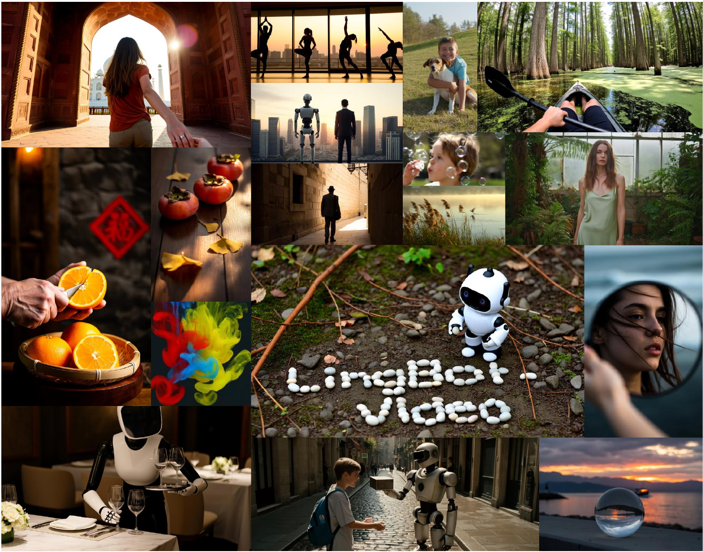
这组 teaser 给出的不是单纯 showcase，而是一套评价轴：动作、交互、机器人形态和第一视角不断出现，模型能力的目标也从“prompt 到漂亮视频”转向“当前世界状态到未来视觉状态”。
单流 DiT 最大化 token 交互和计算复用，MoE 提供大容量但控制 active FLOPs。
结构化 profiling 与知识图谱让采样从“质量过滤”升级到“分布诊断”。
六类 reward、GRPO、RealNFT 把偏好从视觉质量推向动作、速度、物理和任务完成。
A2V 把 prompt 驱动视频改成 action-conditioned rollout，更接近世界模型用法。
02 · 单流 DiT：把文本、图像、视频条件放进同一条序列
LingBot-Video 的 base generator 是 task-unified single-stream diffusion transformer。输入图像或视频先经 Wan2.1-VAE 压成 latent，条件部分由 Qwen3-VL-4B 提取 embedding；随后视觉 patch token 与条件 token 投到同一 hidden size，拼成一条 joint sequence。
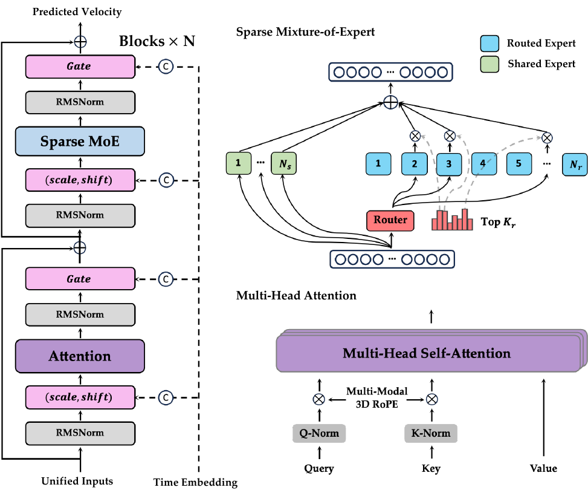
图里真正关键的是“单流”和“只替换 FFN”。单流意味着文本和视频 token 每层都可互相注意；只替换 FFN 意味着 MoE 不改变 attention 主干，而是在 token-wise feed-forward 位置做 conditional computation。
统一 T2I / T2V / TI2V 的方式
论文把图像看作 T=1 的特殊视频，T2V 是无首帧条件的视频生成，TI2V 则把第一帧作为视觉条件。这样做的好处是任务不需要分叉成多个模型，也不需要为每种任务单独设计 encoder。代价是模型必须在一条序列里区分“条件 token”和“目标视觉 token”。
| 模块 | 论文设计 | 代码对应点 |
|---|---|---|
| 视觉压缩 | Wan2.1-VAE，空间约 8 倍压缩，时间约 4 倍压缩。 | pipeline_lingbot_video.py 中 latent shape 由 vae_scale_factor_spatial 与 temporal scale 决定。 |
| 条件编码 | Qwen3-VL-4B 把 prompt / image 条件变成 condition embedding。 | encode_prompt 应用 chat template、image/video token，再裁掉前缀。 |
| 联合序列 | 视觉 patch 和 text condition 投影到同一维度后拼接。 | LingBotVideoTransformer3DModel.forward 中 joint = torch.cat([x, text], dim=1)。 |
| 位置编码 | condition token 走 temporal-only 坐标，video token 走 (t,h,w) 坐标。 |
make_joint_position_ids 让 video 时间轴从 text_len + 1 开始。 |
def make_joint_position_ids(text_len, grid_t, grid_h, grid_w, device):
tt = torch.arange(grid_t, device=device) + (text_len + 1)
hh = torch.arange(grid_h, device=device)
ww = torch.arange(grid_w, device=device)
grid = torch.stack(torch.meshgrid(tt, hh, ww, indexing="ij"), dim=-1).flatten(0, 2)
text_t = torch.arange(text_len, device=device) + 1
zeros = torch.zeros_like(text_t)
text_pos = torch.stack([text_t, zeros, zeros], dim=-1)
return torch.cat([grid, text_pos], dim=0)这段代码是 Multi-Modal 3D RoPE 的落点：文本 token 只占时间轴，视觉 token 的时间坐标从文本之后开始。它解决的是“同一 attention 空间里，文本和视频不要位置混淆”的问题。
为什么坚持 single-stream
双流架构通常让文本/条件和视频 latent 分开处理，再在某些层交互。LingBot-Video 的选择更像 decoder-only LLM：先投影到同一维度，再全层共享 attention 和 FFN。论文给出的理由有三层：
- 交互密度更高：每层都能做跨模态 attention，不只在 cross-attention 层交换信息。
- 算子更规整：大 GEMM、FlashAttention varlen、sequence parallel 更容易统一处理。
- 任务更统一：T2I/T2V/TI2V 不需要 task-specific path，训练 mixture 更直接。
一句话理解 single-stream DiT
它不是“文本指导视频”的旁路结构，而是把文本条件也放进视频 token 的同一个 transformer 世界里，让每一层都能学习条件、画面、时间和空间之间的关系。
03 · MoE：给复杂物理世界更大容量，但不让每个 token 都付全价
视频世界的分布太杂：手、脸、机械臂、液体、刚体、第一视角、运动模糊、镜头移动、低噪声细节修复、高噪声布局生成。这些子问题如果全塞进一个 dense FFN，容易出现任务干扰。MoE 的直觉是让每个 token 在 FFN 分支里选择少数专家，保留总容量，同时控制 active compute。
每个 token 只走 top-K routed experts，但模型总参数随 expert pool 增大。
论文里的 MoE recipe
LingBot-Video 采用 DeepSeekMoE 风格的细粒度专家划分：shared experts 保留通用物理/空间先验，routed experts 捕捉更细的视觉、动作、噪声段和任务差异。关键设置是 E=128、每 token top-8 路由、active parameter 约 1.4B 或 3B，最大探索到 120B total / 11B active。
logits = F.linear(tokens.float(), self.weight.float())
scores = logits.sigmoid()
scores_for_choice = scores + self.e_score_correction_bias.unsqueeze(0)
top_indices = self._group_limited_topk(scores_for_choice)
top_scores = scores.gather(1, top_indices)
top_scores = top_scores / (top_scores.sum(dim=-1, keepdim=True) + 1e-20)
top_scores = top_scores * self.route_scale这段实现里有个很细的设计：e_score_correction_bias 只参与选择专家，不参与最终 gate weight。bias 更像负载均衡的调度提示，真正给专家输出加权时仍用原始 affinity；这样既能缓解专家负载不均，又不会把负载修正直接混进表示强度。
e_score_correction_bias 到底是不是训练参数
在开源推理代码里，它是 persistent buffer，不是 nn.Parameter，不会通过反向传播跟着 loss 更新。论文训练阶段提到的更新更像路由层外部的负载校正：如果某个专家拿到的 token 比平均值多，就降低它的选择 bias；如果太少，就抬高一点。可以把它理解成 router 的“排队调度权重”，不是专家本身的语义能力。
选择专家看 \(s_j+b_j\)，最终加权仍看原始 score \(s_j\)。
为什么视频 MoE 比语言 MoE 更容易踩坑
视频 token 数远大于文本，而且 diffusion 每个 denoising step 都要重复处理整段 latent。router 如果造成跨卡通信过多、专家负载极不均、token restore 开销过大，理论上的 sparse 优势很容易被工程开销吃掉。代码里能看到三类工程处理：
- group-limited routing：先选 expert group，再在 group 内 top-K，减少分布式通信压力。
- grouped experts：用
torch._grouped_mm、Triton pack/restore 或 SGLang fused experts 执行专家矩阵乘。 - FP32 sensitive path：norm、router、time modulation、scale-shift 等模块在
.to()里保持 fp32，降低混精不稳定风险。
开源 30B-A3B 配置里是 128 个 routed experts、4 个 group、每 token 选 top-8 experts，并额外保留 1 个 shared expert。换成路由流程就是：先把 128 个专家切成 4 组，每组 32 个；router 先挑出分数较高的 2 个组，再只在这 64 个候选专家里选 top-8。这样做牺牲了一点全局自由度，但能明显压住 dispatch 和跨卡通信。
# 1. 按专家把 token route 打包成连续块
packed_tokens, expert_offsets = reorder_tokens_triton_pack(tokens, top_indices)
# 2. 每个专家各有一套 FFN 权重，但用 grouped GEMM 合并执行
hidden = silu(grouped_mm(packed_tokens, w1)) * grouped_mm(packed_tokens, w3)
expert_out = grouped_mm(hidden, w2)
# 3. 按原 token 顺序还原，并乘以 router gate weight 做加权求和
output = restore_tokens_triton(expert_out, top_indices, top_scores)torch._grouped_mm 可以把“很多个小专家矩阵乘”拼成一次 grouped matmul，减少 Python 循环和 kernel launch。Triton pack/restore 解决的是 token 顺序问题：专家喜欢连续内存，原序列喜欢按 token 排列，pack 和 restore 就是在这两种布局之间搬运。SGLang fused experts 则把 SwiGLU 的 w1/w3/w2 路径进一步融合，FP8 版本再用量化换速度，所以文档才会提醒它可能带来细微生成差异。
MoE 不是免费午餐
MoE 省的是“每个 token 激活全部 FFN 参数”的成本，但会新增 router、token reorder、expert dispatch、跨卡通信和 load balance 问题。LingBot-Video 的贡献不只是用了 MoE，而是围绕视频长序列把这些细节都工程化了。
04 · Scaling 与 Refiner：容量、延迟和高分辨率怎么一起兼顾
论文的 scaling 实验想证明两件事：第一，在相近 active compute 下，MoE 总容量能显著降低训练/验证 loss；第二，当序列长度上到 1M token 时，MoE 推理延迟仍能接近 active dense 模型，而不是被路由开销击穿。
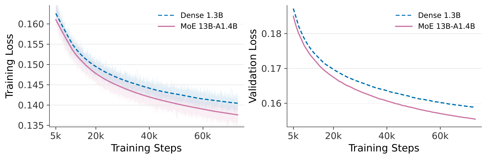
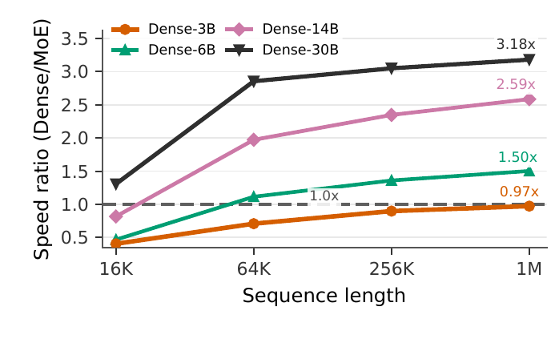
MoE 的价值不是“同等参数更快”，而是“同等 active compute 下装下更多知识”。当对手是 active 等价的 Dense 3B，它不一定更快；当对手是同等总容量 dense 模型，延迟优势才显著。
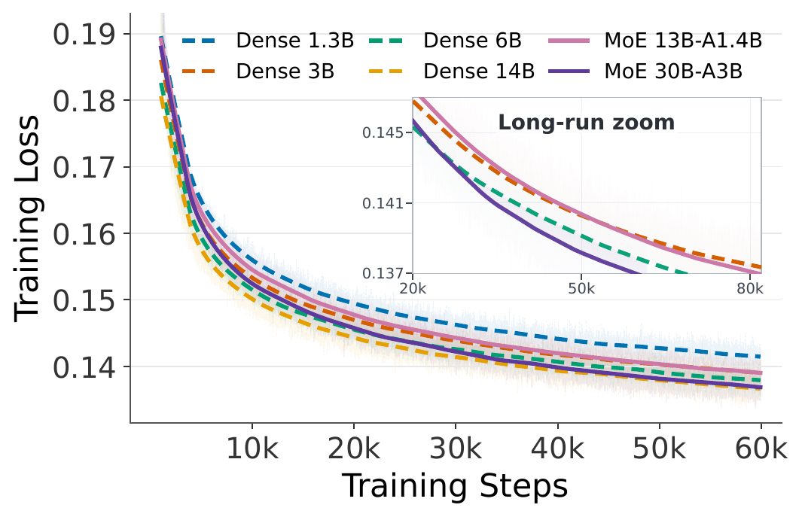
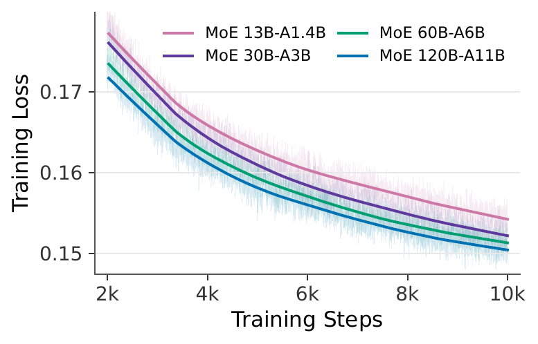
Refiner：从 480p 的世界推演到 1080p 的细节恢复
直接生成 1080p 视频太贵，LingBot-Video 采用 cascaded design：base model 先在 480p 生成全局语义、布局和运动，refiner 再提升到 1080p。它不是从纯高斯噪声开始，而是从退化的低分辨率 latent 附近出发，只在 t ≤ τ 的局部轨迹上做 conditional rectified flow。
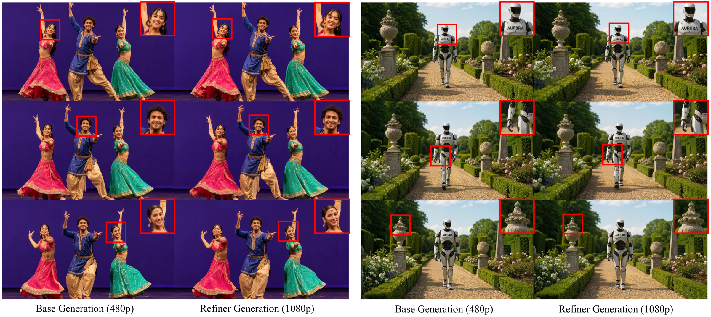
τ ~ Uniform(0.85, 0.95)，推理中示例使用 τ_inf = 0.85。代码里，refiner 的路径在 runner.py 中比较清楚：先读 base 输出视频，resize 到 refiner 目标分辨率，用 VAE 编成 x_up，加噪到阈值时间，再调用 refiner pipeline。TI2V 情况下还会把原始首帧 clean latent 注入，避免高分辨率阶段漂移首帧外观。
# x_up 是 base 视频放大后再经 VAE 编码得到的 latent
initial_latent = (1.0 - t_thresh) * x_up + t_thresh * noise
# 默认参数
refiner_steps = 8
t_thresh = 0.85
refiner_sigma_tail_steps = 2这解释了 refiner 为什么不是普通超分插值：它先把已经有结构的 x_up 推到一个中高噪声状态，再让单独训练的 refiner DiT 沿着低噪声轨迹往回修。
compute_refiner_sigmas 还会根据 t_thresh 重写 scheduler 的时间表。默认 refiner_steps=8 先生成一条完整 schedule，随后扔掉高于 0.85 的噪声点，在开头插入 0.85，最后补两个低噪声 tail step。默认设置下通常仍是 8 次 denoise；如果改 t_thresh 或 refiner_sigma_tail_steps，实际循环次数就会跟着最后的 sigma 列表变化。
05 · 数据系统：这篇论文真正厚的地方
如果说架构决定上限，那么数据决定模型到底学到哪种世界。LingBot-Video 的数据部分不是简单地“收更多视频”，而是建立了一个可诊断、可重采样、可重写 prompt 的数据闭环。
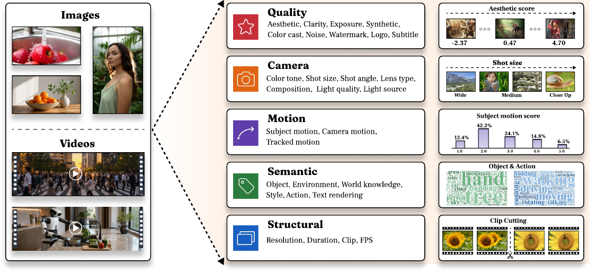
profiling 的核心不是“给样本打标签”，而是让训练集变成可查询的数据库。模型在哪些语义节点 loss 高、哪些动作稀缺、哪些物理交互不够，都能回到 profile 上重新采样。
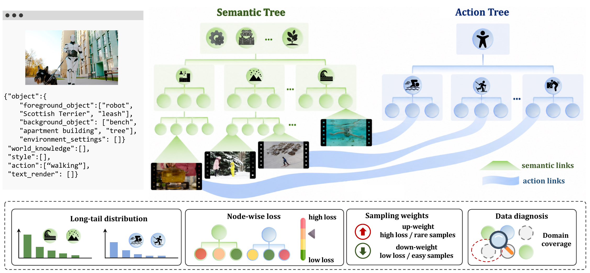
Dense structured captions：把视频监督写成可执行的描述
训练时，模型不是吃短 prompt，而是吃密集 JSON caption。图片 caption 描述整体、镜头、实体、位置、纹理、关系和世界知识；视频 caption 再加全局事件、相机运动和每个元素的 timestamped actions；VLA 与 egocentric 数据则把机械臂、夹爪、佩戴者双手当作 prominent elements 来写动作。
{
"comprehensive_description": "... scene, subjects, camera motion ...",
"camera": {
"shot_size": "medium-wide",
"shot_angle": "high-angle",
"light_quality": "hard daylight"
},
"prominent_elements": [
{
"name": "robotic gripper",
"location": "upper right",
"actions": [
{"time": "[0.0s, 1.2s]", "description": "moves downward toward the apple"},
{"time": "[1.2s, 2.4s]", "description": "closes around the apple and lifts it"}
]
}
]
}这里的好处是 reward 和 rewriter 都能复用同一种结构。比如 text-video alignment reward 可以把 caption 里的实体、动作和时间窗口转成 temporal VQA；推理时 rewriter 也把用户短 prompt 映射回训练时见过的 JSON 格式，从而缩小 train-inference prompt gap。
Caption Rewriter：不是润色 prompt，而是把用户语言映射回训练分布
开源代码里的 rewriter/rewriter_core.py 很能说明这点。它分两步：第一步 Expand，用基础模型把用户短 prompt 扩成较紧凑的动作中心描述；第二步 Map，用 LoRA 版本把描述映射成结构化 JSON。作者特意限制第一步不要 hallucinate 过多低层属性，第二步再做 bounded completion。
detailed = backend.generate(step1_expand(prompt, duration), image, use_lora=False)
raw = backend.generate(step2_map(detailed, duration), image, use_lora=True)
return {"mode": mode, "detailed": detailed, "json": parse_json(raw)}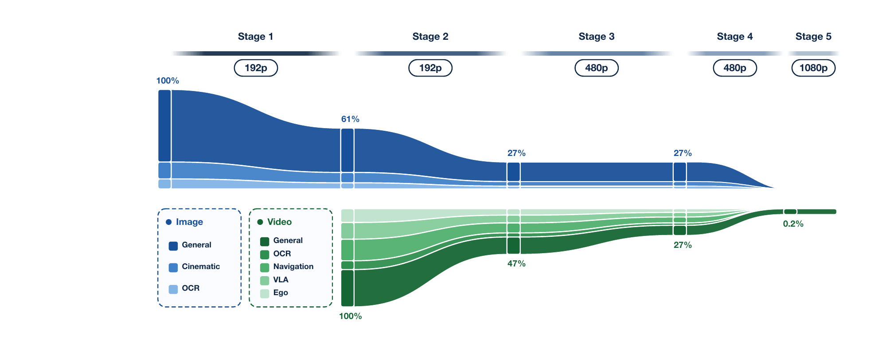
| 阶段 | 训练重点 | 为什么这样排 |
|---|---|---|
| Stage 1 | 192p image-only，建立单帧视觉先验。 | 先让 DiT 和 MoE router 在稳定静态任务上启动。 |
| Stage 2 | 192p image + video，引入 70,000+ 小时具身相关视频。 | 开始学习时序、镜头运动、动作和机器人/第一视角数据。 |
| Stage 3 | 480p，T2V + TI2V 多任务。 | 让模型学会首帧保持和未来帧预测。 |
| Stage 4 | 480p challenge-focused rebalancing。 | 用知识图谱和训练反馈加强长尾动作、操作、物理接触。 |
| Stage 5 | 1080p 高质量视频子集，远低于原始视频池 1%。 | 专门训练 refiner 的细节恢复能力。 |
06 · 后训练：把“好看”往“真实、可控、可执行”拉
预训练给模型基础世界先验，但要让它少犯“慢动作、穿模、手部崩坏、动作缺失、物体凭空消失”这类错误，仅靠 diffusion loss 不够。LingBot-Video 在后训练里组合了 multi-aspect rewards、GRPO、RealNFT、A2V 和 distillation。
多奖励：不用一个总分掩盖失败模式
视频后训练最怕 reward 太粗。一个总分可能觉得视频“还不错”，但它可能同时有手指错位、目标物体消失、动作没发生。论文把 reward 拆成六类，每类盯一种失败模式，再在组内做归一化后合成 advantage。
| Reward | 主要惩罚什么 | 为什么与具身相关 |
|---|---|---|
| Vision quality | 模糊、低清、artifact、整体视觉质量差。 | 保证基础可观察性，否则物理判断没有意义。 |
| Text-video alignment | 动作漏掉、实体错、时间顺序错。 | 用 temporal VQA 按实体和时间窗口验证动作。 |
| Dynamic degree | 视频像静态图片，运动不足。 | 机器人和物体交互必须真的发生状态变化。 |
| Motion coherence | 不自然慢动作、速度感错。 | 物理 rollout 需要接近真实 24fps 运动节奏。 |
| Human-motion consistency | 手、脸、肢体数量、透明身体、人体拓扑错误。 | 人机交互和第一视角场景高度依赖手部/人体合理性。 |
| Physical plausibility | 穿透、消失、无因运动、材料/刚体行为不合理。 | 这是从视频生成走向世界模型最核心的 reward。 |
\(\mu_r\)、\(\sigma_r\) 在同一个 prompt 的 rollout group 内按 reward 类型分别统计。
这个公式的重点是“分别归一化”。视觉质量 reward、动作对齐 reward、物理合理性 reward 的尺度不一样，如果直接相加，数值范围大的 reward 会支配训练。分别标准化后，模型看到的是“这一条样本在同组里相对好多少”，而不是某个 reward 原始分数有多大。
GRPO：只让一个 denoising step 随机，解决 credit assignment
普通视频 diffusion RL 的难点是轨迹长、token 多、reward 贵。如果每个 denoising step 都随机，再把整条轨迹的 reward 回传到所有 step，credit assignment 会很模糊。LingBot-Video 采用 group-shared single-step exploration：同一个 prompt 的一组 rollout 只在同一个采样步 k 注入随机性，其他步走确定性 ODE。这样组内差异更容易归因到那个 step。
同一个 prompt 生成 \(G\) 个 rollout，只在 \(t_k\to t_{k+1}\) 注入随机性，其他 denoising step 保持 deterministic ODE。
CPS 负责在第 k 步注入随机性，但又不破坏原本的噪声 schedule。模型在时间 \(t_i\) 预测 velocity \(\hat v_\theta\)，先得到 clean latent 和 noise latent 的估计：
然后从 t_i 走到 t_{i+1}：
论文实验取 \(\eta=0.7\)。
这组公式的直觉是：CPS 加了新噪声 ε，但总噪声系数仍等于 schedule 里要求的 t_{i+1}。因此 reward 看到的是正常干净的视频样本，不是被过量随机性污染的坏轨迹。对应的 transition log-likelihood 可以写成：
不同 timestep 的梯度强度并不一样，论文再加一个 timestep-balanced weight。它先估计第 k 步的 transition gain：
最后的 GRPO 目标就是用组内 advantage 去推高好样本那一步的 transition probability：
论文这里的取舍很激进：strictly on-policy、每批 rollout 只消费一次、不使用 KL penalty、不使用 reference model，并且 fine-tune 全部模型参数。它省掉了语言 RLHF 里常见的 importance ratio 和 reference KL，但代价是对 rollout/reward/training 的工程同步要求很高。
RealNFT：用真实视频当 chosen，生成视频当 rejected
只靠 reward model 会有 reward hacking 风险。RealNFT 的做法是构造真实视频与当前模型生成视频的偏好对：真实 latent 是 chosen，生成 latent 是 rejected，二者加同一个噪声到同一个 timestep。优化时使用 active policy、EMA old policy、implicit positive/negative branches，并用 frozen base 做 KL 正则，避免策略漂移太远。
\(x_0^w\) 是真实视频 chosen latent，\(x_0^\ell\) 是模型生成的 rejected latent。
这里的 w 可以理解成 win/chosen，l 是 lose/rejected。两边用同一个 timestep 和同一个 noise，模型比较的是“同等扰动下，真实视频和生成视频应该往哪个 velocity 方向回去”。这样不需要把整条 denoising trajectory 存下来反传，训练负担比轨迹级 RL 小很多。
\(\hat v_{\mathrm{old}}\) 来自 \(\theta\) 的 EMA copy。
v_pos 是“往当前模型方向靠”的正分支，v_neg 是“从当前模型方向反推开”的负分支。真实视频用正分支拟合，生成视频则用负分支压制。论文把 DiffusionNFT 的 per-sample loss 写成：
在 LingBot-Video 的 pairwise setting 里，真实视频取 r=1，生成视频为了避免额外 reward model 开销直接取 r=0。再用 frozen base model 做一个防漂移项：
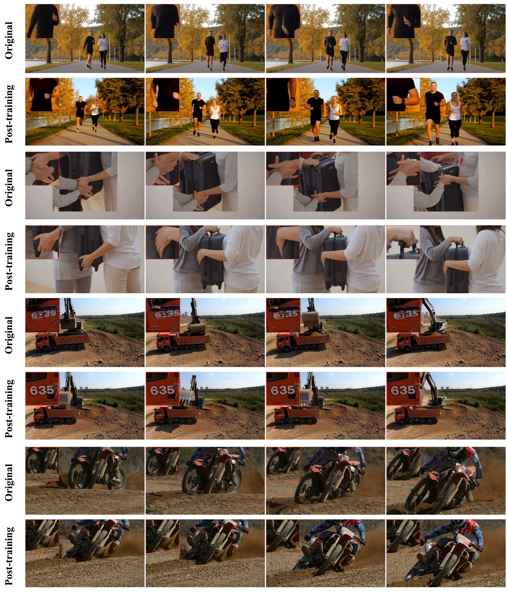
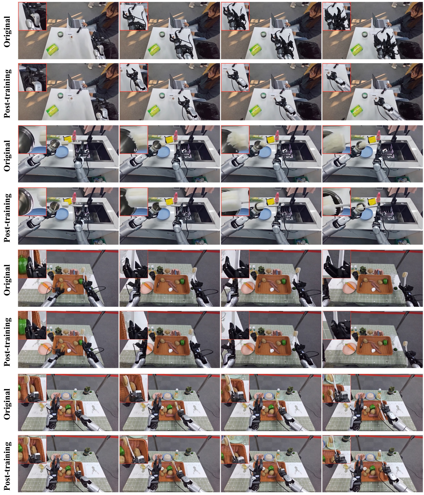
A2V：从 prompt 描述未来，变成 action 驱动未来
Action-to-Video 是这篇论文最接近“world model”的部分。普通 T2V/TI2V 里，prompt 已经描述了未来发生什么；A2V 则只让 prompt 描述初始状态，未来由机器人 action sequence 驱动。这才更像机器人规划中的 imagined rollout。
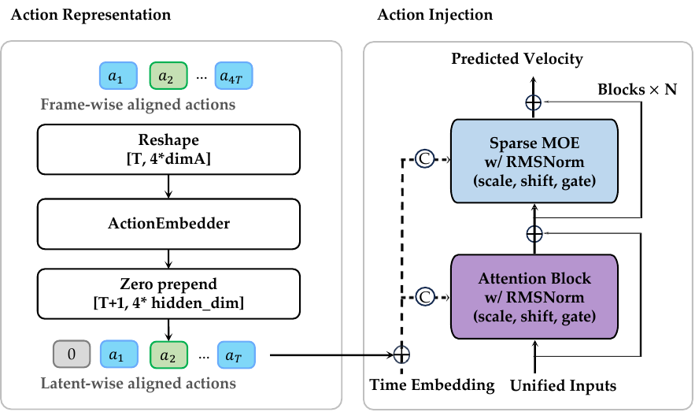
ActionEmbedder 得到 action latents；在初始状态前 prepend zero action，使动作 latent 与视觉 latent 时间对齐，再注入 transformer blocks。A2V 的关键不是多塞一个 action token，而是把监督目标改掉。caption 只写初始世界状态，后续视觉变化必须由动作序列解释；如果 prompt 泄露“接下来机械臂会把苹果放进盒子”，模型仍然可能只是在做文本到视频，而不是动作条件 rollout。
论文还提到 ActionEmbedder 最后一层采用 zero initialization。这个细节很重要：刚开始训练时，动作分支几乎不扰动已经预训练好的视频 backbone；随着后训练进行，模型再逐步学会把 action residual 注入 transformer blocks。训练上，论文使用 Fourier GR-1 后训练数据，8k steps、global batch size 64、learning rate 1e-5，并同时优化 ActionEmbedder 和完整 transformer，而不是只训一个轻量动作头。
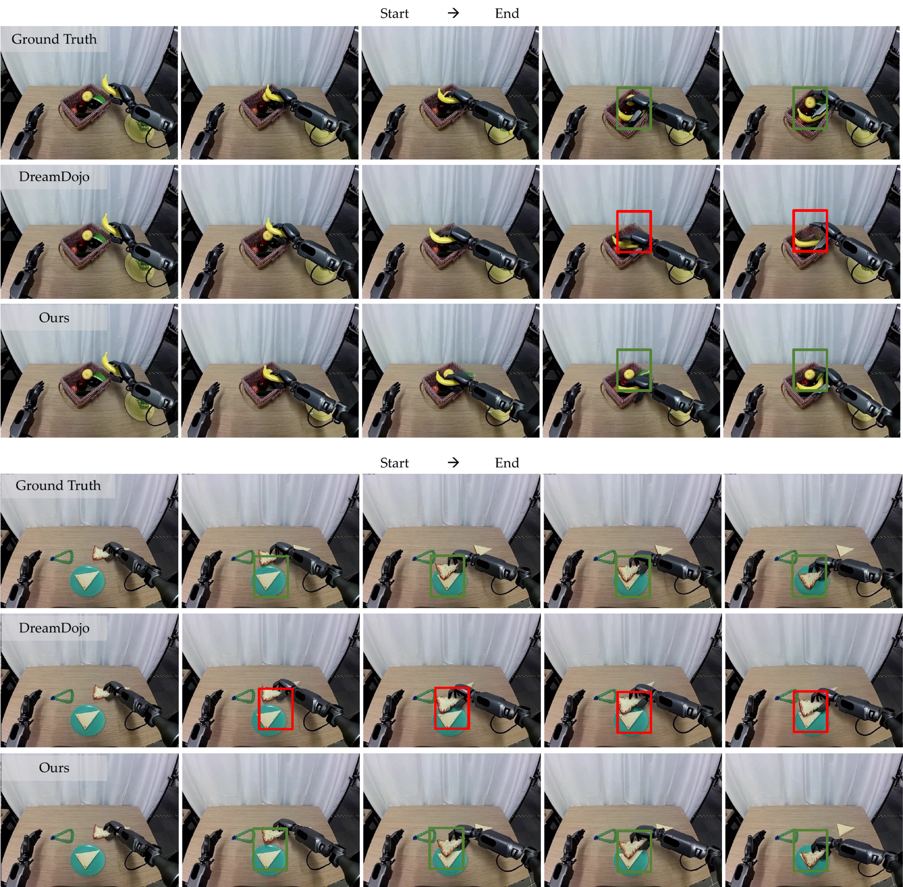
为什么后训练系统必须单独做
论文的基础设施章节给了一个很实际的解释：视频 RL 的中间状态不是文本 token，而是高维 video latent trajectory。单个训练样本约 100K tokens，中间 latent 和 per-step sampling statistics 可以到 GB 级别；30B MoE 还要做权重同步和专家并行。这也是为什么它把 rollout、reward evaluation、training 拆成不同执行角色，并用 service-oriented reward layer 处理多种 reward model、服务端解码和 batch 请求。
reward services: 解码视频，运行 VQA / HPS / motion / physics rewards
training workers: 接收 transition-level data，计算 GRPO 或 RealNFT loss，更新模型
07 · 评测证据：强项集中在 TI2V、机器人和物理延续
LingBot-Video 的评测分三层：内部 benchmark、公共 benchmark 和人评。理解这些结果时，最好不要只看平均分，而要看它在哪些任务上最强。
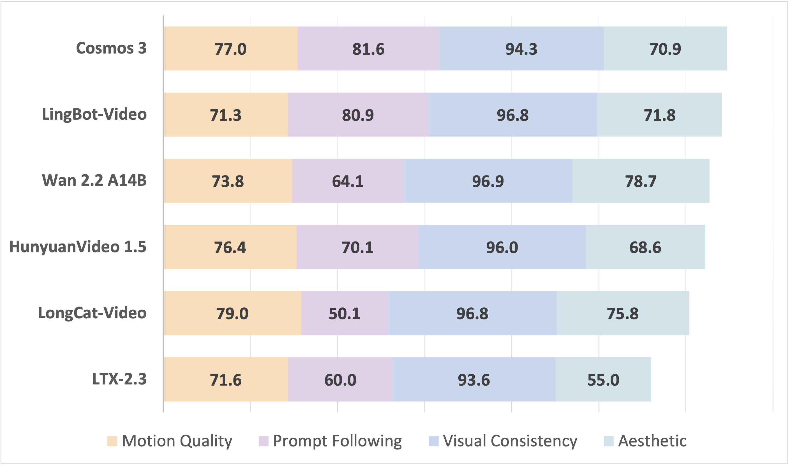
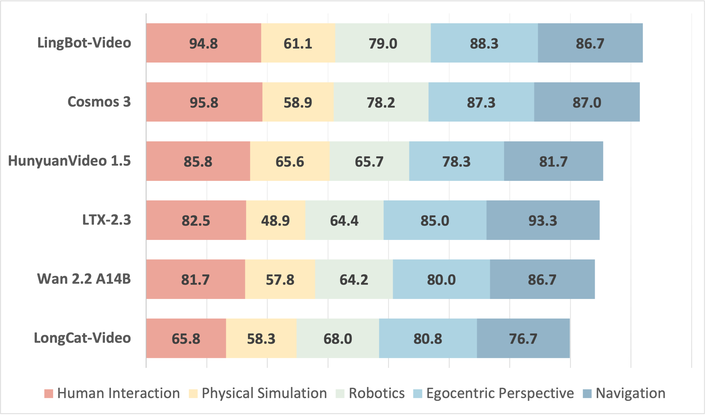
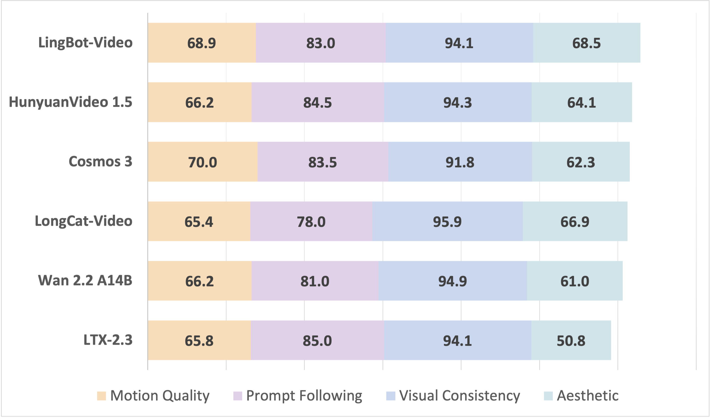
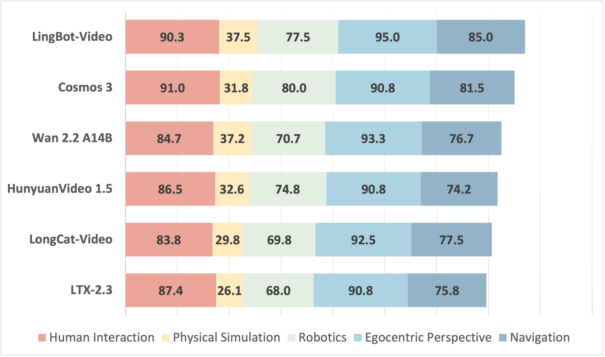
RBench 与 Physics-IQ Verified
RBench 专门测机器人中心交互，包含 650 个 text-image prompts：250 个任务场景和 400 个 embodiment-specific 场景。LingBot-Video 平均分 0.620，超过 Cosmos3 Super 的 0.581，也超过多个开源基线；闭源 Wan 2.6 在部分子项仍很强，但平均分略低于 LingBot-Video。
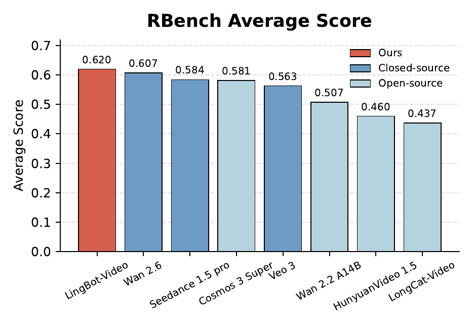
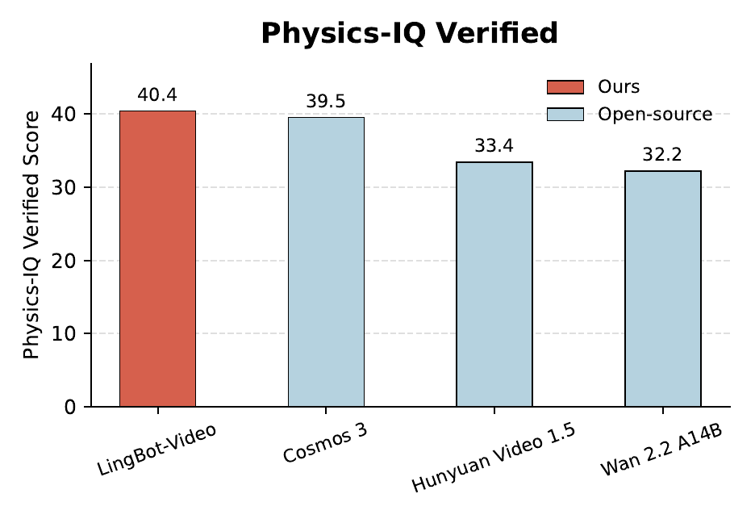
| 模型 | RBench Avg. | Manip. | Long-hor. | Quadruped | Humanoid |
|---|---|---|---|---|---|
| LingBot-Video | 0.620 | 0.578 | 0.634 | 0.758 | 0.689 |
| Cosmos3 Super | 0.581 | 0.487 | 0.591 | 0.739 | 0.691 |
| Wan 2.2 A14B | 0.507 | 0.381 | 0.501 | 0.690 | 0.648 |
| HunyuanVideo 1.5 | 0.460 | 0.442 | 0.438 | 0.634 | 0.595 |
Physics-IQ Verified 更像“真实物理延续”测试：它基于 66 个受控物理实验，覆盖固体、流体、热、光学、磁学。论文评的是 I2V，即给一帧 switch frame 预测后续运动。这和 LingBot-Video 的 TI2V 强项非常一致。
人评：T2V 接近强开源，TI2V 优势更稳定
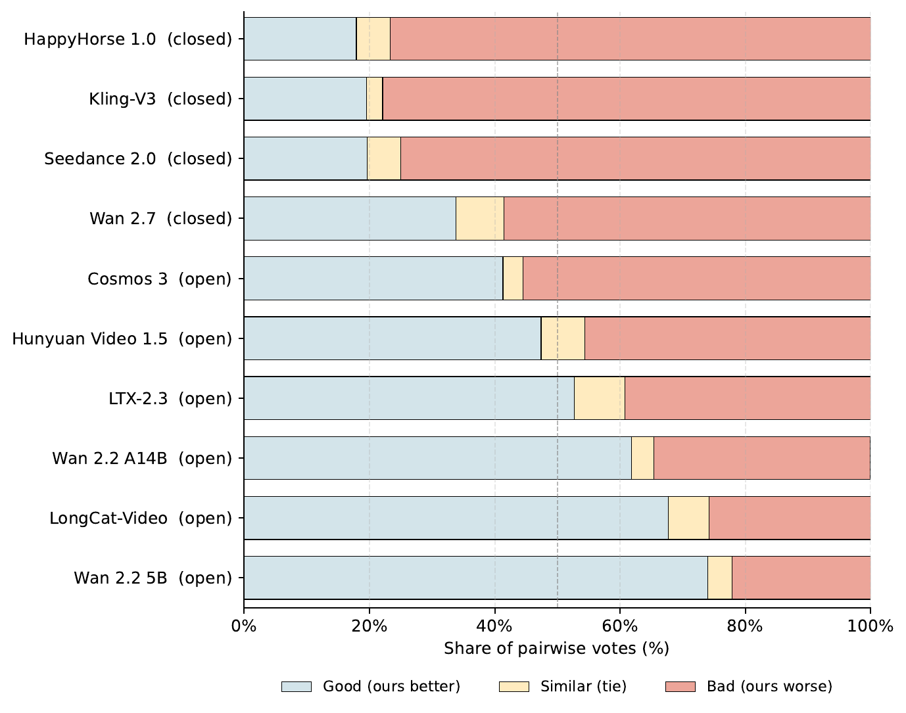
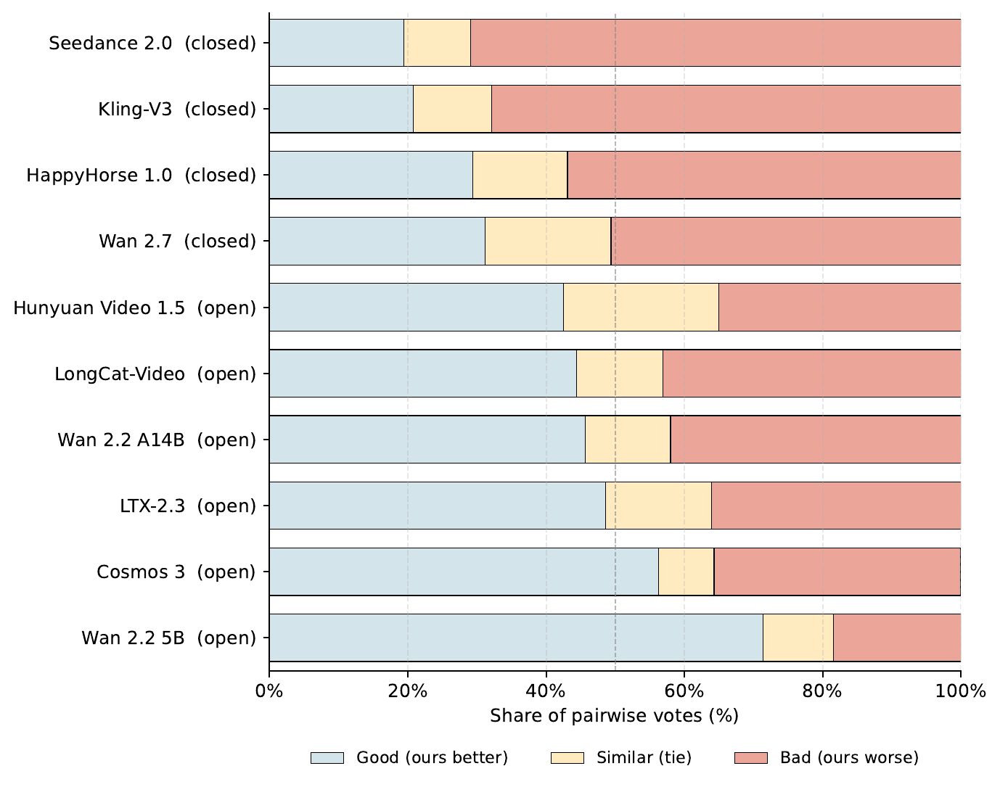
怎么读这些结果
这篇论文最强的证据链不是“通用 T2V 全面第一”，而是“在首帧条件、机器人交互、物理延续这些更接近具身使用方式的任务上更强”。这也和它的数据、caption、reward、A2V 设计是同一个方向。
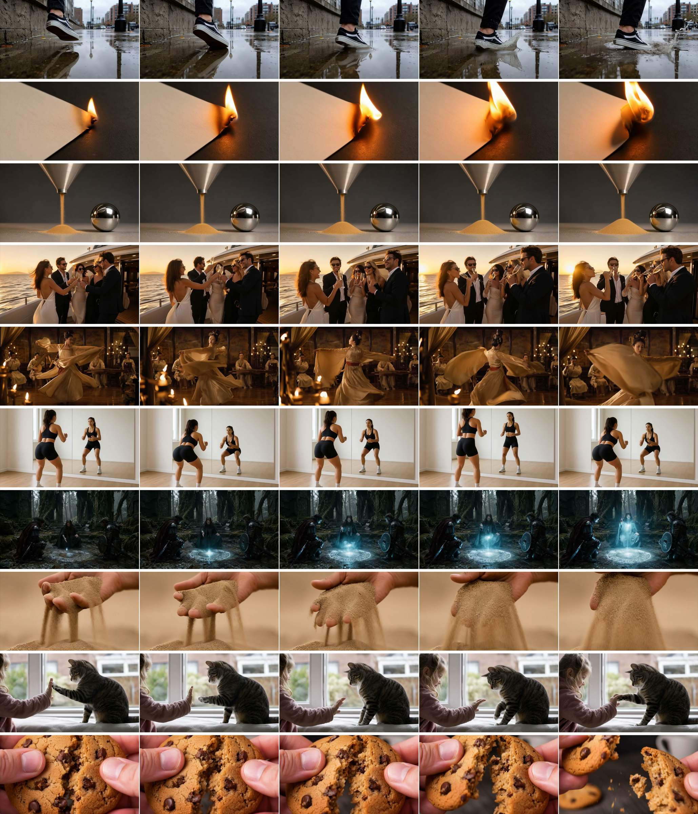
08 · 开源代码怎么落地：从 prompt 到视频的推理链路
lingbot-video 目录把运行模型需要的推理工程拆得比较清楚：structured prompt、pipeline、I2V 首帧约束、MoE backend、FSDP inference、SGLang fallback、refiner 串联。
{"caption", "duration"}。runner 入口：为什么 README 强调 prompt_json
docs/zh/dit_inference.md 里明确提醒：DiT 推理不直接吃原始自然语言 prompt，必须先用 rewriter 生成结构化 JSON，再通过 --prompt_json 传入。这与论文训练时使用 dense structured captions 是一致的。
python rewriter/inference.py \
--prompt "a robotic arm picks up an apple from a table" \
--mode t2v --duration 5 --output prompt.json
python rewriter/auto_negative.py \
--mode t2v --prompt_json prompt.json --output negative.json
python scripts/inference.py \
--task t2v --model_type moe --backend diffusers \
--prompt_json prompt.json --negative_prompt_json negative.jsonTI2V：首帧条件被用两次
pipeline_lingbot_video_i2v.py 的设计很直观：输入图像一方面给 Qwen3-VL 作为视觉条件，另一方面被 VAE 编成 clean latent prefix，然后在 denoising 前后反复通过 _apply_inpainting 写回 latent。这样首帧不仅是语义提示，也是硬约束。
cond_latent = self.encode_image_latent(image)
latents = self.prepare_latents(...)
latents = self._apply_inpainting(latents, cond_latent)
for t in timesteps:
noise_pred = self.transformer(...)
latents = self.scheduler.step(noise_pred, t, latents).prev_sample
latents = self._apply_inpainting(latents, cond_latent)MoE backend：质量优先、速度优先和多卡切分
MoE expert backend 通过环境变量选择：默认 LINGBOT_MOE_EXPERT_BACKEND=grouped_mm，也支持 sglang_triton 和 sglang_triton_fp8。文档里也说得比较直接：FP8 路径更偏速度，但可能改变相对 grouped MoE 的生成细节；更关注 fidelity 时用默认 grouped experts。
| 文件 | 最值得读什么 |
|---|---|
transformer_lingbot_video.py |
patchify、joint sequence、3D RoPE、QK-Norm、AdaLN、Sparse MoE router、grouped/SGLang expert backend。 |
pipeline_lingbot_video.py |
T2V/T2I pipeline、prompt encoding、latent shape、CFG、scheduler loop、VAE decode。 |
pipeline_lingbot_video_i2v.py |
首帧同时进入 VLM 条件和 clean latent prefix，denoising 中持续 inpainting。 |
runner.py |
prompt_json 读取、resolution bucket、frames 计算、base/refiner 串联、多 GPU 参数。 |
fsdp_inference.py |
按 block shard transformer，并保留 fp32 sensitive parameters。 |
sglang_moe_shim.py |
SGLang fused experts 与 FP8 quantization shim。 |
rewriter/ |
两阶段 prompt rewrite、LoRA adapter 切换、auto-negative 删除式筛选。 |
09 · 优缺点与后续研究方向
我认为最强的地方
第一，系统设计很完整。很多视频论文会在“世界模型”这个词上停留得比较抽象，而 LingBot-Video 把数据、caption、reward、A2V 和 serving 都串成了同一个问题：怎样让视频模型学会可控的物理延续。
第二，MoE 与视频长序列的矛盾匹配得很好。视频需要大容量保存复杂世界先验，但每个 denoising step 又极贵；Sparse MoE 正好提供容量-计算解耦。论文也没有只讲概念，而是给了 active-comparable scaling 和 1M token latency。
第三，开源推理代码能看到关键工程选择：router bias 不进入 gate weight、group-limited top-K、TI2V 首帧 latent 锁定、refiner 串联、FSDP inference 与 SGLang/FP8 backend。这些比抽象架构图更能说明模型如何被实际跑起来。
需要保留的疑问
- 专家是否真的专业化：论文证明 MoE 有效，但没有充分展开 expert routing 的可解释性，比如哪些专家负责机器人、手部、低噪声细节或高噪声布局。
- reward model 的偏差：六类 reward 很全面，但 VLM/VQA 评估仍可能偏向可见表象，物理 reward 是否能覆盖长时因果仍需更多验证。
- A2V 泛化边界：8k steps 的 GR-1 后训练展示了方向，但要成为机器人规划中的 reliable simulator，还需要更严格的闭环控制、误差累积和多步规划评测。
- 开源复现距离：推理代码较完整，但训练数据、profiling、后训练基础设施未完整公开，研究者难以复现最关键的数据/后训练系统。
- 商业模型对比：人评里 TI2V 对开源优势明显，但对强商业模型仍落后，说明视觉质量和通用偏好并未被完全解决。
后续可以怎么做
一个直接方向是做 MoE interpretability：统计 expert usage 与任务、动作、噪声 timestep、空间区域的关系，看专家是否形成“物理/机器人/手部/纹理/文字”等功能分工。第二个方向是把 A2V 接入真实机器人规划环路，用 action rollout 的预测误差而不是视频相似度来评价。第三个方向是建立更强的 physics-grounded reward，结合可追踪物体状态、接触事件、3D 几何和可微/不可微物理检查，而不只依赖 VLM 判分。
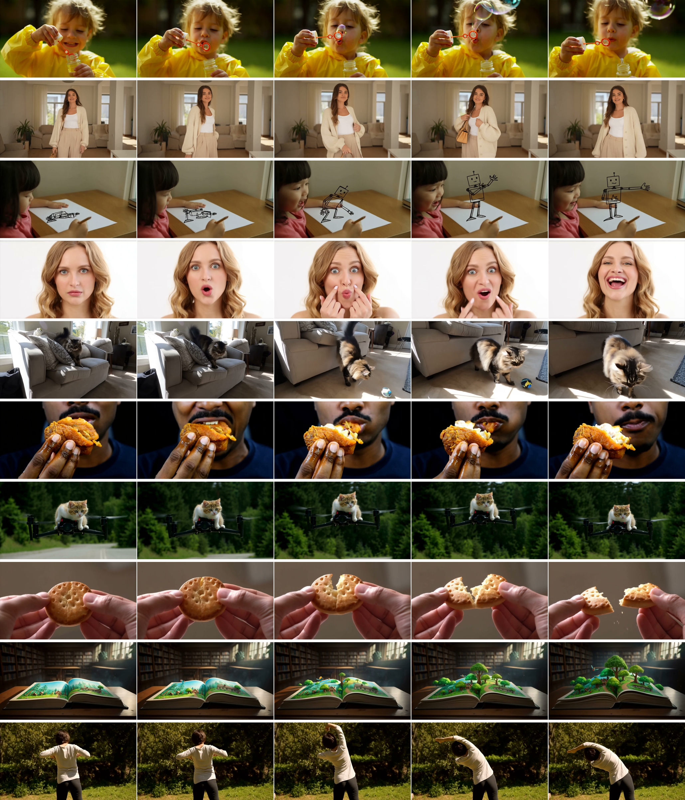
最后记住这条线
LingBot-Video 的价值不是某个 isolated trick，而是一条连贯的工程链：single-stream DiT 统一任务，Sparse MoE 扩容量，structured data 补动作和物理，multi-reward post-training 修正失败模式，A2V 把视频生成推进到动作条件世界模拟，最后用 refiner 和 serving backend 把模型跑到可用分辨率和速度。
如果只用一句话概括：它试图把“会生成视频的模型”改造成“能在视觉空间里想象未来的模型”。